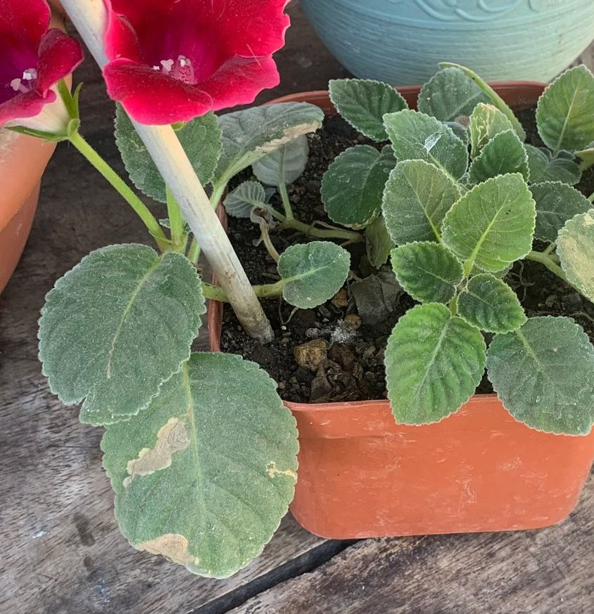

zalévání na listy
Co pravděpodobně vidíte
Kulaté hnědé skvrny po kapkách, mapy po tvrdé vodě, někdy černé tečky při větrání v chladu. Časté je zhoršení po rosení na přímém slunci nebo v chladné místnosti bez proudění.
Co to je
Kapky na citlivých listech mohou zanechat minerální mapy a v kombinaci se silným světlem či chladem přispět k poškození pletiv. Při trvale vhlkém povrchu se mohou rozvíjet bakteriální/houbové skvrnitosti.
Je to problém?
Často jen estetický. Při opakování a špatném proudění vzduchu může dojít k houbové nebo bakteriální infekci.
Jak ověřit diagnózu
- Skvrny odpovídají velikosti kapek a místům dopadu.
- Vznikly po rosení na slunci / v chladu bez větrání.
- Po omezení rosení se tvorba zastaví (pokud již není infekce).
Co udělat hned
- Umístěte rostlinu do místa s dobrou cirkulací vzduchu, ať listy rychle oschnou.
- Poškozené listy postupně odstraňujte, až narostou nové.
- Zalévejte ke kořenům; rosení pouze ráno, jemnou mlhou a měkkou vodou.
Prevence do budoucna
- U afrických fialek, kalateí a dalších citlivých druhů neroste; zvyšujte vlhkost vzduchu jinak.
- Používejte měkkou vodu; nerosit na přímém slunci.
- Udržujte lehký pohyb vzduchu v místnosti.
Časté záměny
- Zbytky po rosení (da:896) jsou jen mapy po vodě/spreji a dají se setřít; zde jde o poškození pletiv a/nebo infekci.
Obrázky
